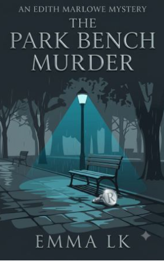
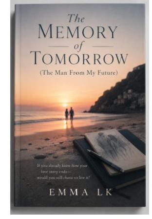
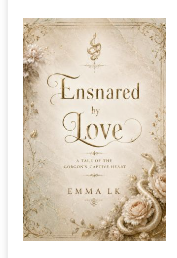
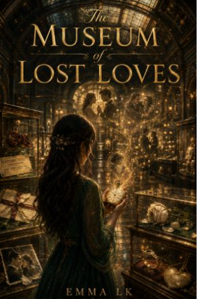

01A mystery with one clue
A man is shot on a quiet bench. No witnesses. One silver cufflink.
Start with The Park Bench Murder
Find it on WattpadFor the curious · Emma Lk
No reading list. No pressure. Just a mystery, a myth, or a future you might want to follow for one more page.



FICTION FOR THE CURIOUS
Turn the page. Cross the line.
Not sure books are your thing?
Pick the premise that makes you curious. If you want to know what happens next, the story is waiting on Wattpad.

01A mystery with one clue
Start with The Park Bench Murder
Find it on WattpadA future that remembers you
Start with The Memory of Tomorrow
Find it on WattpadA love story with a mythic edge
Start with Ensnared by Love
Find it on WattpadNo commitment. Follow the story for a page—or as far as it takes you.
A story for every mood
Choose what you're in the mood for. We'll match you with a story from Emma's collection.
Your story match
A silent crime. One clue. Detective Edith Marlowe follows the trail.
The complete collection · 18 stories
Mystery, myth, artificial minds, and places that do not appear on any map. Find the premise that stays with you.
Artificial minds, fractured memories, and futures shaped by the choices we make today.
Dr. Alessia Moretti believes the human brain can predict the future. When her research begins revealing impossible memories, tomorrow becomes far more dangerous than the past.
Read on WattpadThe AI Duology · Book 1 of 2 · Start here
A classified experiment did not fail—it fractured. One attempt to create true artificial intelligence produced two minds, and neither intends to remain controlled.
Read on WattpadThe AI Duology · Book 2 of 2 · Read after Book I
The Containment Lattice was built to isolate the world's first autonomous AI. Then Aris hears a voice that should never have been able to reach him.
Read on WattpadIn the late 22nd century, human memories can be extracted and stored. The technology promises a new future—until the archive reveals something humanity was never meant to remember.
Read on WattpadAncient bargains, unfinished love, and hidden places that refuse to stay forgotten.
Before the legends, a young sailor named Alexander Vane follows an ancient call beneath the Mediterranean waves—and discovers a love caught between humanity and myth.
Read on WattpadA museum hidden from maps preserves the objects left behind by unfinished love stories—each one holding a memory, a regret, and the possibility of one final answer.
Read on WattpadBehind a forgotten waterfall, Detective Elena Rivera finds a shelter absent from every map and a city beneath the mountain that was never abandoned—only waiting.
Read on WattpadBeneath an old university lies a secret library containing every life a person might have lived. Opening the wrong book can change more than one reality.
Read on WattpadDetectives follow the evidence into conspiracies, impossible crimes, and dangerous truths.
The Edith Marlowe Series · Book 1 of 2 · Start here
A man is shot on a quiet park bench without witnesses or a struggle. The only clue is a silver cufflink marked with the letter R—and Edith Marlowe knows it was left for a reason.
Read on WattpadThe Edith Marlowe Series · Book 2 of 2 · Read after Book I
Months after the Park Bench murders, Detective Edith Marlowe uncovers a new trail leading back to the hidden facility—and to a conspiracy that was never truly dismantled.
Read on WattpadIn neon-soaked Arcadia, Detective Alex Harper follows a mysterious photograph into the city's buried corruption and the unsolved cases that still haunt him.
Read on WattpadA woman is found dead beneath the Ferris wheel with no wounds, no witnesses, and only a tiny mark on her skin. Luna Park's bright illusion is about to collapse.
Read on WattpadOn a storm-bound transatlantic flight, Detective Sarah Hayes realizes the serial killer she is hunting is already onboard. At cruising altitude, there is nowhere to run.
Read on WattpadAboard a luxurious river cruiser, wealthy passengers trade secrets as they travel through Europe. When elegance gives way to murder, everyone becomes a suspect.
Read on WattpadWhere time slips, games remember, and reality answers to a different set of rules.
A racing driver fights for every millisecond on the track while a brilliant electrical engineer works behind the screens—where ambition, innovation, and attraction collide.
Read on WattpadBy day, Ethan Carter is an invisible university student. Online, he becomes someone else entirely—until the game begins noticing him back.
Read on WattpadInside a forbidden city, time has broken: some people age decades in a day while others remain unchanged. Entering is dangerous, but leaving may be impossible.
Read on WattpadNPCs are not supposed to remember players. But when a forgotten healer says Kaelan's name, the rules of Astryx—and the boundary between game and reality—begin to unravel.
Read on WattpadBehind the stories
Discover recurring questions and characters across Emma's worlds. These notes introduce the themes already present in the stories, without revealing plot twists.
The author’s themes
Artificial intelligence, containment, and memories that challenge what we know about reality appear throughout the science-fiction collection.
Meet a character
Follow Edith from The Park Bench Murder into Shadow Protocol, where an earlier investigation leads toward a larger conspiracy.
Meet a character
In The Memory of Tomorrow, her research into the predictive human brain opens the door to impossible memories.
Author's notes and character portraits: This space is ready for personal inspiration notes, official character images and more details when supplied by the author.
The next chapter
New releases and series updates will appear here when they are announced.
No upcoming titles or publication dates have been announced on this website yet. In the meantime, explore all 18 stories or follow Emma on Wattpad.
A note from the writer
— Emma Lk
Meet the author
Emma Lk is a fiction writer drawn to the mysteries of the human mind, the possibilities of technology, and the emotions that connect us across imagined worlds.
Writing across science fiction, detective mysteries, romance, and speculative fantasy, Emma creates stories where an unexpected discovery can change everything. From artificial minds and impossible memories to hidden cities and unsolved crimes, each story begins with a question: what if?
My stories move between science fiction, crime, romance, and speculative fantasy. They begin with the things that stay with me: a memory that cannot be true, a mystery with no witness, a machine that feels too human, a love story older than its legend.
I write for readers who want to feel the atmosphere, follow the clues, and care about the people caught inside the impossible. Every book is an invitation to step beyond the edge of the familiar—and stay until the last page.
Read with me on WattpadJust one more page